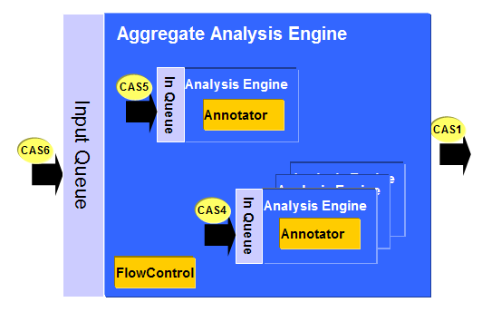

A UIMA aggregate analysis engine is implemented as a synchronous, single-threaded object. That is, when the aggregate AE's process method is called, only one delegate can be working on that CAS at a time.
For a UIMA AS aggregate, each delegate has its own input queue, and the aggregate controller sends requests to the delegates via their queues. By default a delegate is assumed to be collocated with the aggregate controller, but the Deployment Descriptor allows a delegate to be "remote", i.e. mapped to the input queue for another UIMA AS service. For collocated delegates, the Deployment Descriptor can specify how many instances of the delegate should be instantiated; each instance will have a listener thread to receive requests and execute user code.
When calling "remote" delegates, the CAS is serialized into CasXmi format for transfer. Colocated delegates share the in-process CAS object and have no serialization overhead. Remote delegates with no dependency on each others results can be called in parallel on the same CAS, providing opportunities for reducing latency in real-time applications.
UIMA AS aggregates optionally provide extensive error handling for service calls, including retry, ignore, delegate disable, service termination, and more. When combined with the UIMA flow controller, users can implement complex application flow/error handling logic.

Figure 2 - UIMA AS Aggregate |